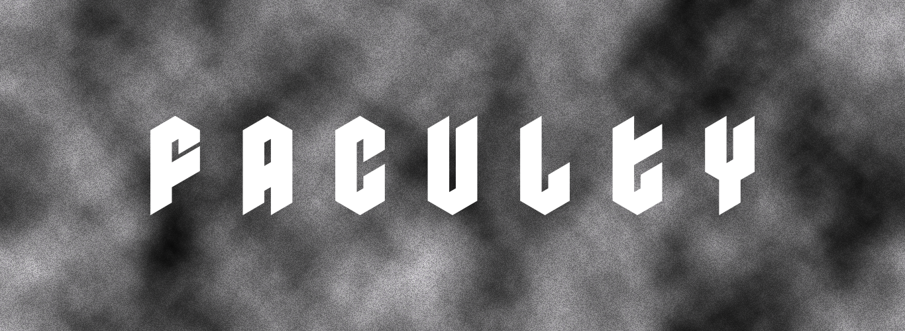

honoring humanity
through experience.
What we do
Faculty is a design practice that fosters and encourages collaboration and experimentation in the creative field.
What matters
- Responsible design that is human-centered
- Awareness of mental health in the creative industry
- Ethical approaches across all phases of the design process
- Semantic, syntactic and pragmatic perspectives
use design to help communicate things that are important
use design to help communicate things that are important